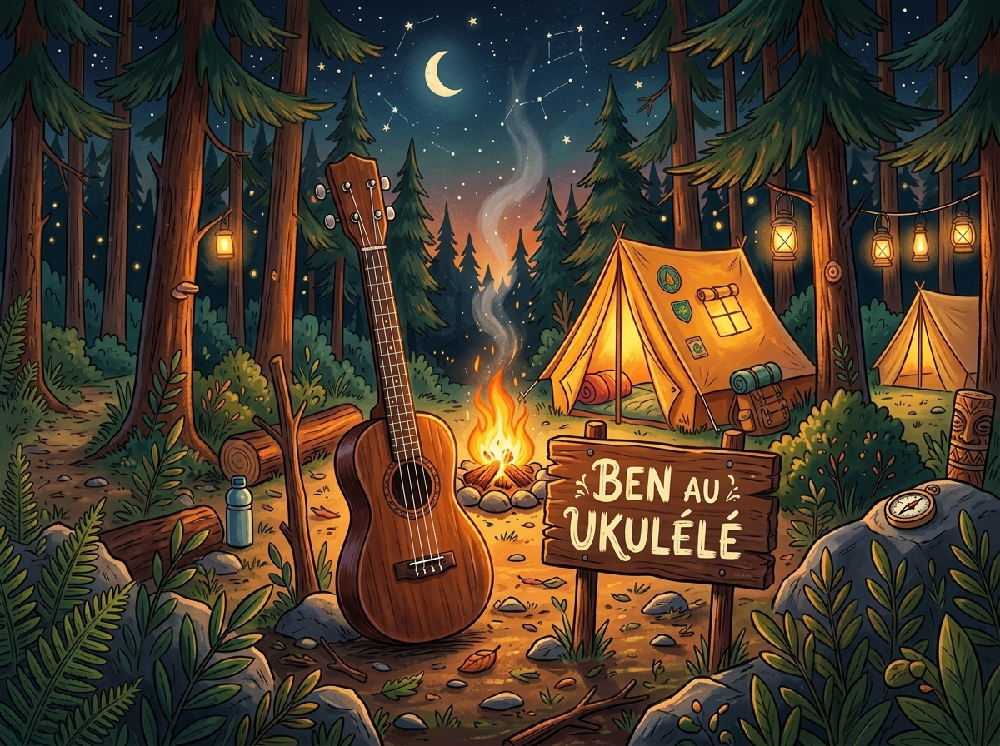

🖼️
Cadre Photo 4:3 — Ben au Ukulélé
Format d'encadrement :
Plein format 4:3 (Remplit la page paysage A4)
Format cadre standard 8" × 6" (20.3 × 15.2 cm) avec traits de coupe
Format cadre photo 4" × 3" (10.2 × 7.6 cm) avec traits de coupe
🖨️ Imprimer / Exporter en PDF

✂️ Découpez le long des pointillés pour insérer dans votre cadre photo